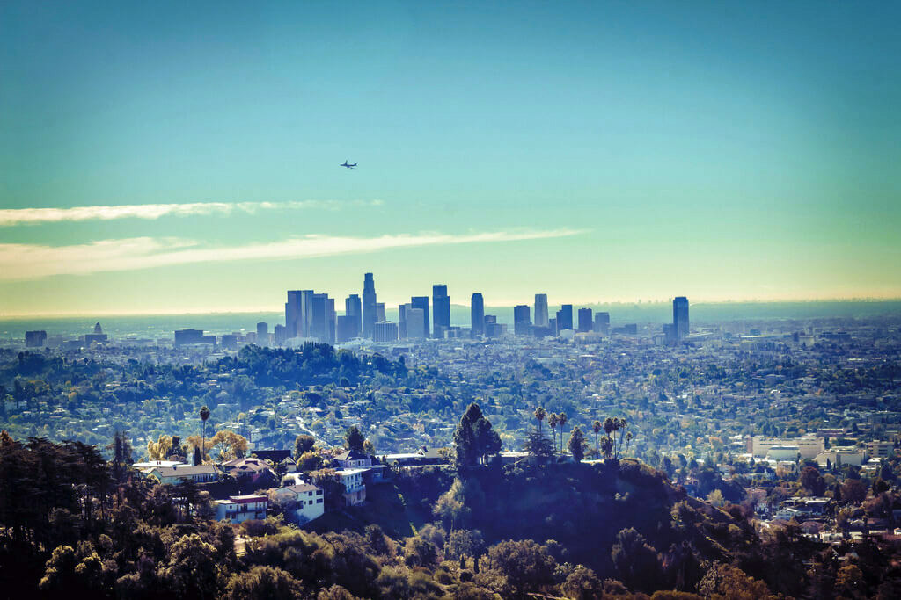

Los Angeles

Los Angeles



| Data założenia | 1781 |
| Powierzchnia | 1302 kilometry kw. |
| Populacja | 4 mln os. |
To najludniejsze miasto amerykańskiego stanu Kalifornia, a zarazem drugie pod względem liczby mieszkańców miasto w Stanach Zjednoczonych (za Nowym Jorkiem), za sprawą populacji liczącej ok. 4 mln mieszkańców. Los Angeles zajmuje powierzchnię 1302 km² i położone jest w regionie Kalifornii Południowej. Miasto stanowi centrum aglomeracji Los Angeles-Long Beach-Santa Ana, którą w 2010 roku zamieszkiwało 12 828 837 osób, czyniąc z tego regionu 2. pod względem populacji obszar metropolitalny Stanów Zjednoczonych i jednocześnie jedną z najludniejszych metropolii świata. Wielkie Los Angeles to połączony obszar statystyczny (combined statistical area) z liczbą mieszkańców wynoszącą 18,8 mln mieszkańców. Los Angeles jest siedzibą hrabstwa Los Angeles, czyli najbardziej zaludnionego i jednego z najbardziej zróżnicowanych etnicznie hrabstw w Stanach Zjednoczonych. Z kolei obszar samego Los Angeles uznany został za najbardziej zróżnicowane etnicznie amerykańskie miasto. Mieszkańcy Los Angeles często określani są mianem „Angelenos”. Więcej informacji (pasazer.com)